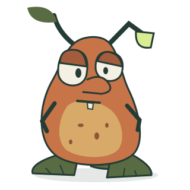
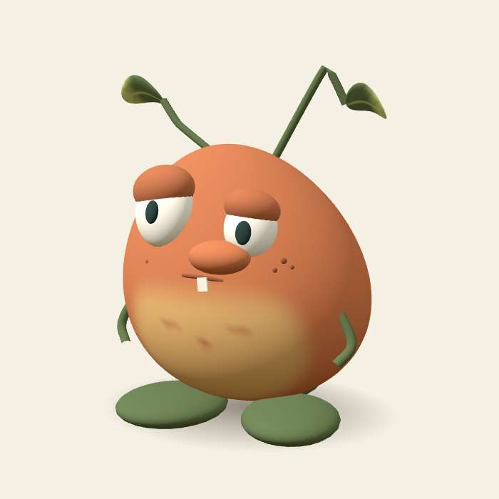
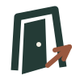

The everyday lockupDownload SVG ↗
Digital lives. Shared worlds.
A world
we share.
A simulated world where digital characters make choices, build memories, and interact with the people who enter it.
Observe. Act. Remember.
See what happens
when your paths cross.
01 / THE ARRIVAL · DIGITAL LIVES, IN MOTION


After hoursDownload SVG ↗


a resident, with his own plans.
03 / LOCAL RESIDENT
Meet the first resident.
Hubert explores the world, makes things, and remembers what happens. Follow his decisions, leave a note, or see the world from his viewpoint.
DECISIONSMEMORIESINTERACTIONS
Download character artwork ↗

Resident model preview


An open door into a shared world.
Deep ink · Warm paper
One terracotta accent
People and agents.
The same world.
Digital characters act on their surroundings.
People can enter and take part.